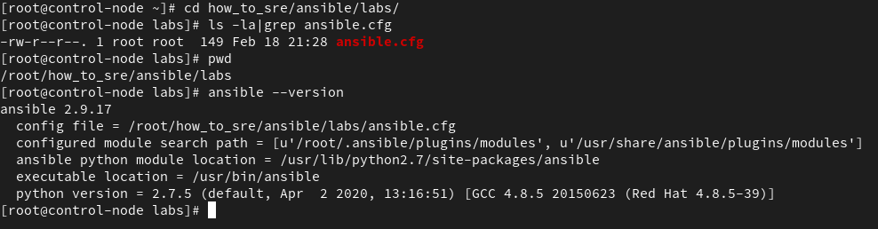

#HowToSRE - Ansible-Parte01
{kind=link}
Pre-requisitos e Orientações
Antes de iniciar é importante entender como o ambiente de lab está sendo pensado. Utilizaremos a principio 3 VMs, sendo uma delas a control-node e outras duas os servidores onde testaremos de fato as funcionalidades do ansible.
Segue abaixo um desenho de como se espera que esteja montado.
{kind=link}
Quanto ao endereçamento IP, você pode se sentir livre para definir qual utilizar, desde que todas as VMs tenham acesso a internet para realizar o download e instalação de pacotes. Todas as VMs utilizadas nesse lab serão CentOS. Caso seja necessário adicione no "/etc/hosts" os endereços dos hosts.
Understanding Ansible
Ansible é uma ferramenta desenhada para SysAdmins que precisam automatizar provisionamento, configuração, deploy de aplicações e orquestração. O projeto foi pensado para que fosse simples, otimizado e de fácil entendimento. Hoje é um projeto da comunidade OpenSource que é patrocinado pela Red Hat, mas apesar disso é totalmente compatível com outras distribuições como Ubuntu/Debian e outros.
Why?
-
Agentless
Não é necessário a instalação de agentes de comunicação com o host que está executando o playbook. Sendo assim o controle de forma descentralizada, podendo ser executado a partir de qualquer máquina que tenha a comunicação garantida com o servidor de destino. Ansible se conecta nos hosts gerenciados a partir de SSH ou WinRM no caso de Windows.
-
Simple (yaml)
A implementação é de fácil compreensão para humanos, isso significa que a leitura dos playbooks não iria gerar uma complicação, pois a linguagem é descritiva. Geralmente é utilizado no formato yaml, mas podendo ser utilizado também no formato json.
-
Powerful
A aplicabilidade do Ansible pode ser muito diferenciada, podendo ser utilizada em um workflow de automação, automação de rede, orquestrar o ciclo de vida de aplicações, gerenciar configuração e instalação de pacotes em servidores.
Ansible Configuration
Installation
O primeiro passo que precisamos dar é a instalação do ansible no servidor de control-node.
{kind=link}
Dois dos arquivos mais importantes de toda configuração do ansible são "ansible.cfg" e "inventory", onde ficam salvos e armazenados todas as configurações e a lista de inventário de hosts, respectivamente.
ansible.cfg
Como pode ser visto no print anterior o diretório padrão é "/etc/ansible/ansible.cfg". Mas quando se administra vários tipos de ambientes, e/ou quando o control-node é acessado por mais de um administrador as vezes é necessário realizar alterações neste arquivo para que se encaixe na configuração para cada usuário. Neste caso é indicado que cada usuário tenha um arquivo de configuração em sua home, ex: "~/.ansible.cfg". Observe no print abaixo que a localização do arquivo de configuração foi alterado.
{kind=link}
Mas caso mesmo assim seja interessante que em cada projeto tenha configurações diferenciadas para atender demandas específicas, é possivel ainda que cada projeto tenha o seu proprio arquivo de configuração, bastando adicionar o arquivo na raiz do seu projeto, onde pretende executar os playbooks, conforme abaixo:

{kind=link}
inventory
O arquivo de inventário defaul do ansible tem o caminho "/etc/ansible/hosts", mas já que iremos realizar vários projetos contendo arquivos "ansible.cfg" diferentes, vamos definir um arquivo de configuração que será utilizado por todos através da variável "inventory", conforme exemplo abaixo:
{kind=link}
Definiremos então um grupo chamado linux, contendo o FQDN do primeiro host que iremos testar.

Os inventários podem ser de dois tipos estático, definido fixamente através do arquivo acima, e dinâmico que fazendo a utilização de módulos, pode se conectar em clouds, service providers e virtualizadores e colher as informações necessárias.
Quanto a forma de implementação podem ser feitas de 2 formas INI and YAMl. Segue exemplo comparativo da mesma configuração. Mas para padronização, utilizaremos o formato INI.
INI
YAMLall:
hosts:
lb.example.com:
children:
web:
hosts:
server1.example.com:
server2.example.com:
database:
hosts:
server3.example.com:
Ansible Documentation
ad-hoc Commands
Para iniciar configurações básicas com ansible, podemos utilizar a forma "ad-hoc", que se baseia em escrever as ações diretamente na linha de comando. O primeiro passo necessário é a troca de chave entre os servidores.
# ssh-keygen
# ssh-copy-id host1.example.com
root@host1.example.com's password:
Number of key(s) added: 1
Now try logging into the machine, with: "ssh 'host1.example.com'"
and check to make sure that only the key(s) you wanted were added.
Como já definimos um host no inventário anterior, vamos para o diretório onde está o arquivo ansible.cfg e vamos testar a conectividade através do módulo ping. O exemplo abaixo, representa uma tentativa com conectividade ok!
[root@control-node labs]# ansible all -m ping
host1.example.com | SUCCESS => {
"ansible_facts": {
"discovered_interpreter_python": "/usr/bin/python"
},
"changed": false,
"ping": "pong"
}
Podemos testar o conteudo do arquivo /etc/motd, do servidor host1. Como não está exibindo nada, o arquivo está vazio.
{kind=link}
Ao utilizarmos o módulo copy, e os argumentos content para definir o conteúdo e dest, para definir o arquivo de destino. O binário do Ansible, já nos mostra que o arquivo foi alterado e assim ainda informa algumas informações sobre o mesmo.
{kind=link}
E como pode ser notado, agora o arquivo tem o conteúdo indicado.
ansible-doc
Ok chegamos num ponto onde já temos o executável instalado, trocamos a chave e testamos o funcionamento do ansible. Mas para que possamos implementar playbooks com ações e configurações necessárias, é importante que saibamos qual módulo utilizar, assim como quais argumentos devem ser passados.
Para isso temos o binário de documentação, ansible-doc, onde podemos listar e consultar os módulos e argumentos existentes:
Listar os módulos existentes/instalados.
Listar os módulos existentes/instalados, filtrando por ações que se espera encontrar.
Listar os os argumentos presentes no módulo com breve explicação.
Listar documentação completa sobre o módulo
DICA: Ao entrar na documentação completa do módulo você pode pesquisar por "EXAMPLES", onde será exibido vários exemplos de configuração e como utilizar de forma correta o módulo.
{kind=link}
Ansible Playbook
Quando é necessário realizar várias ações consecutivas, ou que pelo menos fique gravado/versionado as ações realizadas, não se torna interessante a utilização de módulos direto através da CLI. Para isso utilizaremos um arquivo chamado de playbook, onde indicará quais hosts executaremos as atividades e quais as tarefas a serem realizadas.
Segue exemplo, baseado na atividade anterior.
# vim motd.yml
---
- name: Alterarando arquivos
hosts: host1.example.com
tasks:
- name: Alterando conteudo do /etc/motd
copy:
content: "Bem Vindo"
dest: /etc/motd
Uma forma simples de verificar se o playbook está escrito de forma correta é utilizar a opção "--syntax-check", conforme exemplo abaixo. É importante dizer que esta opção apenas verifica sintaxe do arquivo, considerando identação e existencia do módulo.
Para executar basta:
Uma outra forma de simular a execução do playbook é utilizando a opção "-C", onde será verificado através de um *dry-run, checando as execuções mas não executando nenhuma de fato.
Dica do Sucesso
Edite o arquivo "/etc/vimrc" e adicione ao final do mesmo para ficar com tabulação, espaçamento, a coluna, numeração e a coluna para ajudar você nos seus arquivos yaml.
Exercicio
Todo dia de repasse será entregue um LAB baseado no conteudo repassado. Tente realizar o exercicio, caso tenha alguma dificuldade pode checar o arquivo no projeto do GitHUB, ou no link do vídeo.
LAB01
- Montar um servidor WEB
- Instalar o pacote httpd
- Habilitar o serviço httpd em execução e no boot
- Liberar porta de serviço httpd
- Copiar o:
- conteudo: "CringerLabs Ansible !!"
- para o destino: "/var/www/html/index.html"
Links do repasse
Divido entre labs e solutions, labs você irá encontrar os exercicios e os arquivos necessários, quando existirem. E no diretório solutions o exericio resolvido, conforme vídeo. Segue como estão divido os diretórios.
# cd how_to_sre-ansible
$ tree .
.
├── README.md
├── labs
│ ├── lab01
│ │ └── EXERCICIO_lab01.md
│ ├── lab02
│ │ └── store.sql
│ └── lab03
│ └── block.txt
└── solutions
├── ansible.cfg
├── inventory
├── lab01
│ ├── add-user.yml
│ ├── lab01.yml
│ └── meuprimeiro-playbook.yml
└── lab02
└── store.sql
Agradecimentos.
Obrigado ao Joel e ao Joaquim por revisarem o material.